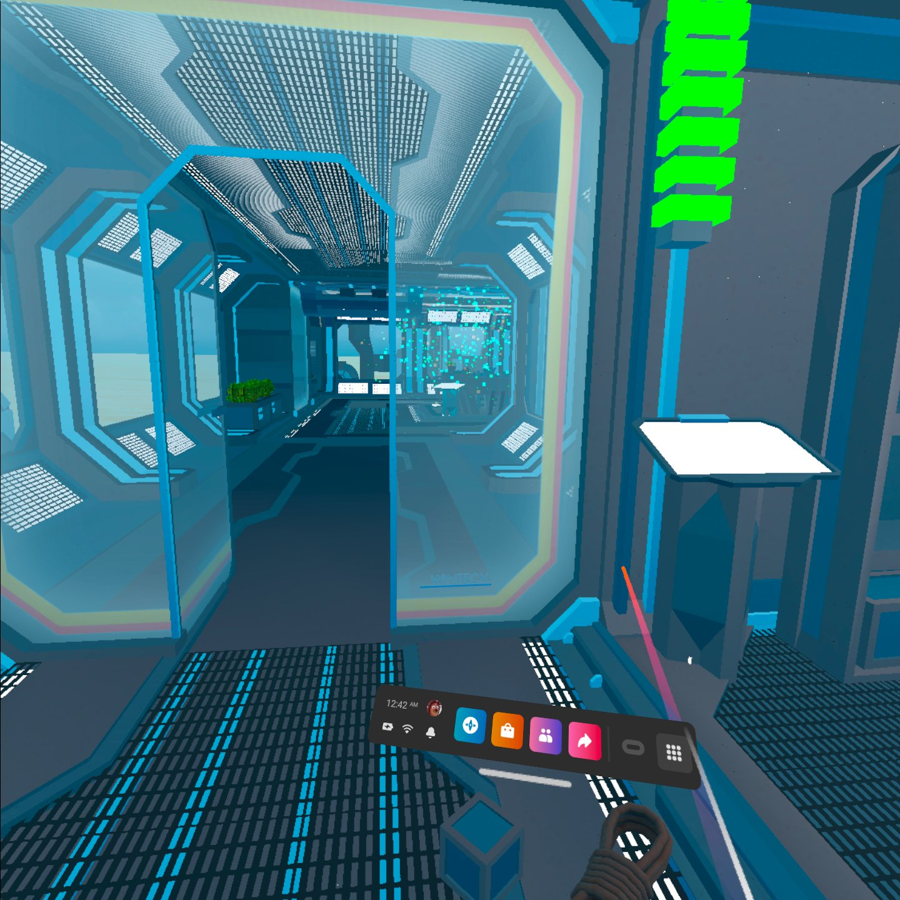
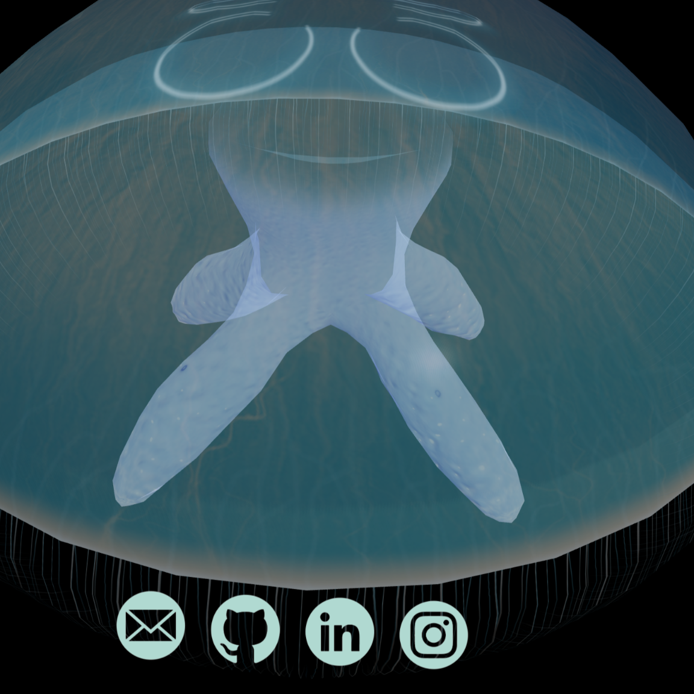
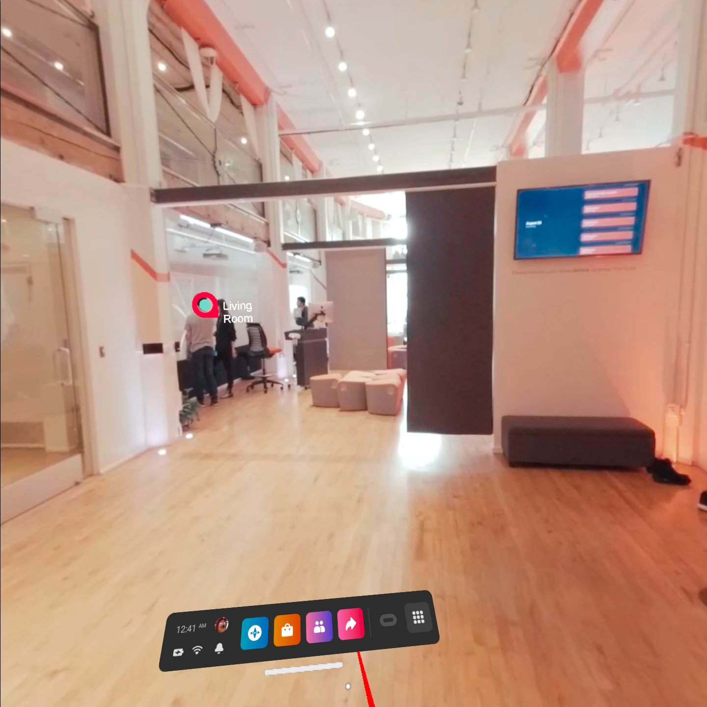

Stratton Brooks
🚀 Welcome to my website!

About Me
I’m Stratton Brooks, i’m a Native American in tech. I’m currently finishing up my studies at Holberton School–a peer learning computer science program. I’ve spent the past year studying 70-80 hours a week, learning how to program for augmented and virtual reality systems.
I chose this path because of the joy I see when people use XR products for the first time, and if I had a career where I helped contribute to that joy then I'd feel fulfilled.
So far, my biggest professional accomplishment is passing my exam to be certified by Unity for game development.
Currently, i’m looking for a software engineer position in the XR space. I enjoy working with C#/ Unity and WebXR/Javascript. I plan to pick up C++ this year and learn Unreal.
Education
Holberton School
January 2021 - June 2022
Diploma of Computer Science; Augmented and Virtual Reality
The University of Tulsa
August 2013 - December 2017
Bachelor of Arts Management, Advertising.
Project: VR Escape Room
An introduction to XR and 3D objects for the Oculus input system. This project is an escape-room-like display, but it's easy to escape.
Project: AR Business Card
An introduction into WebXR with three.js and WebGL. This is an augmented reality business card with floating jellyfish.
Project: VR 360-Degree-Video Tour
An introduction to deploying VR applications. This project is a collection of 360-videos using the xr plugin sdk. A guided tour of the old Holberton campus in San Francisco.
Work History
Living Arts
August 2017 - May 2019
Communication Manager - I helped modernize communications, managed the website, social media, and communication timelines for 200+ events.
Communication Intern - I managed and executed public relations strategies for a non-profit art gallery. I worked with the local media to promote exhibitions, the Day of the Dead Arts Festival, and the Champagne and Chocolate Gala.
Starbucks
November 2013 - March 2018
Partner Trainer - I developed and challenged partners to fit their potential.
Skills
Comfortable Languages & Frameworks ⭐ ⭐ ⭐ (⭐)
C#, C, Python, Unity, Three.JS, Javascript
Certification
Unity Certified Associate: Game Developer - Issued by Unity. Expires February 2025.